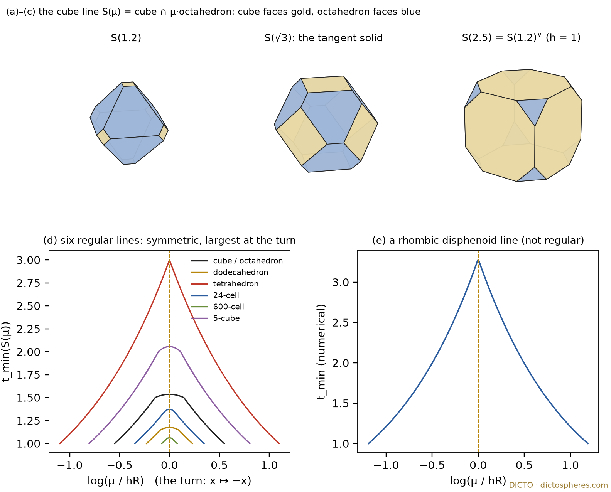
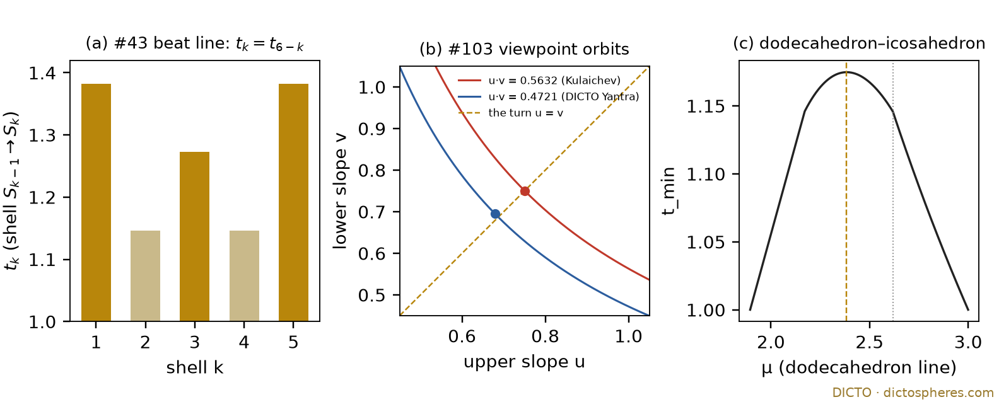
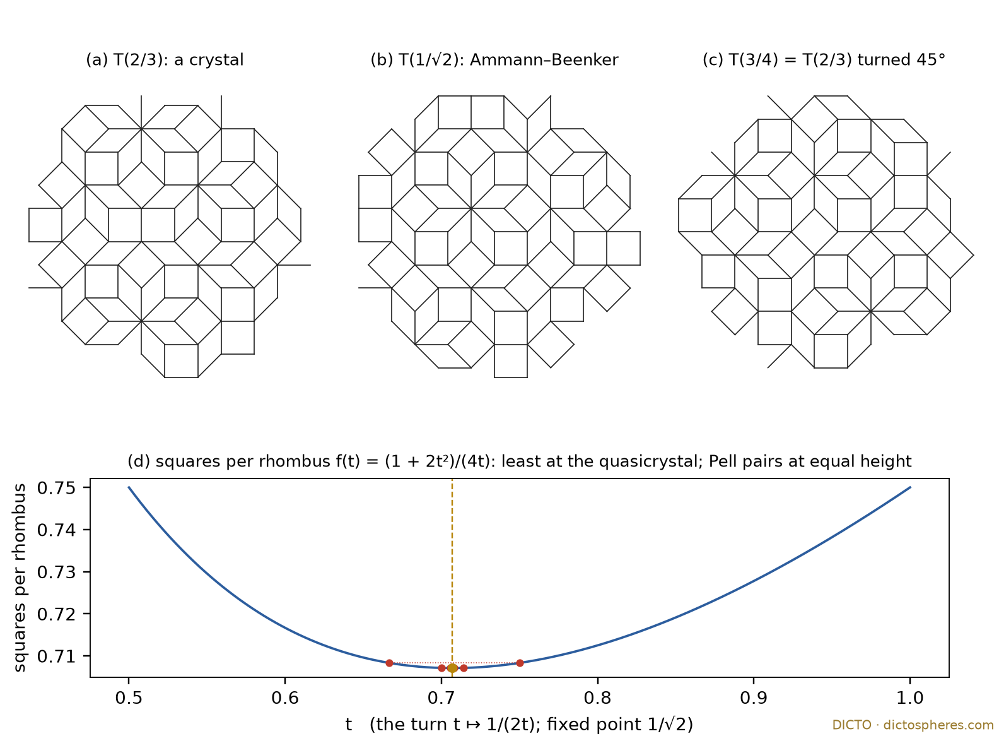

Every polar line turns at the solid whose faces all touch one sphere: the antipol, DICTO's Turn Theorem for the regular polytopes, and a line of crystals that turns at the Ammann–Beenker quasicrystal
Abstract. DICTO's polar line moves a solid towards its polar: S(μ) = P ∩ μ·P*, for a polytope P with all facets at one distance h and all corners at one distance R. DICTO's antipol S∨ keeps the facet normals of S and inverts their distances. Main theorem (Theorem 1, the turn law; exact, general, elementary proofs): for h² < μ < R² every plane of the line is a facet, the antipol of S(μ) is h−2·S(h²R²/μ), so the turn μ ↦ h²R²/μ is an involution of the line; its one fixed point μ = hR is the solid whose facets all touch the sphere of radius h; every wall of the line is the root of a determinant that is linear in μ, and the walls of the antipol are the turned walls; the containment constant tmin of #43 reads the same at μ and at its turn, and at the fixed point it equals (R/r)², the equality case of #43's Theorem 1. The antipol is not the polar: the polar of S(μ) is the hull of the feet of the antipol's facets. Theorem 2 (DICTO's Turn Theorem; exact, for every regular convex polytope in every dimension): tmin has a closed form along the whole line, log tmin is concave in log μ, and the turn's fixed point is its unique maximum: 5 − 2√3 on the cube line, 10 − √5 − √(30 + 6√5) on the dodecahedron and icosahedron lines, 2 at the 24-cell on the tesseract line, 26 − 2√5 − 10√2 − 2√10 on the 600-cell and 120-cell lines. Conjecture 1: the summit holds for every P with one inradius and one circumradius (numerical evidence on two non-regular disphenoid lines). The same turn, an involution of a line with one fixed point, appears in four further places: the Hopscotch, the beat line of #43 (k ↦ 5 − k, the pair GTI|FPD at the fixed point), the yantra viewpoint of #103 (β ↦ −β; Kulaichev's equal great triangles are the turn of their orbit, and the only yantra at the turn meeting his other three conditions), and a line of crystals: on the cut-and-project line T(t) through the Ammann–Beenker tiling, T(t) turned by 45° is T(1/(2t)) (exact, at tile level), so the turn t ↦ 1/(2t) pairs the Pell crystals across its one fixed point 1/√2, the quasicrystal, where all four edge directions balance and the squares per rhombus are fewest (Theorem 3). Each result is labelled exact, numerical or classical.
Take a cube and an octahedron, centred together, and let the octahedron grow. At first it lies inside the cube; then it cuts off the cube's corners, then it has eaten the cube down to its own shape, and at last only the cube's faces are left. DICTO walks this line like a game of hopscotch: from wall to wall, where the shape changes its faces, and at the end of the line he turns and walks back. This paper proves that the turn is a law of the line, not a rule of the game. Every solid on the line has a partner, its antipol, which keeps the solid's face directions and turns their distances inside out; the partner is again on the line, at the turned place h²R²/μ. Walking back is walking the partners. In the middle stands the one solid whose faces all touch a single sphere: there the solid is its own partner.
DICTO's Turn Theorem adds the summit: for the regular solids and their higher-dimensional relatives, the measure of how far a solid reaches beyond the hull of its face centres, tmin, climbs to the middle from both ends and is largest exactly there. The same pattern of a line with one turning point shows up where it was not looked for: in DICTO's yantra, seen from different viewpoints, and in a line of crystals whose turning point is a quasicrystal. That last case is the bridge between periodic and aperiodic order that DICTO set as his first aim: the quasicrystal is the turning point of a line of crystals.
Polytopes and the polar line. P is a convex polytope in ℝd with the centre 0 inside, all facets at one distance h from 0 (unit facet normals ni) and all corners at one distance R (corners vj, directions v̂j = vj/R). Every regular convex polytope is such a P; so are non-regular ones, for example the disphenoids (tetrahedra with four congruent faces). P* = P° = {x : vj·x ≤ 1} is the polar body. DICTO's polar line is
S(μ) = P ∩ μ·P* = {ni·x ≤ h for all i} ∩ {v̂j·x ≤ μ/R for all j}, 0 < μ < ∞,
with c = h²R². For μ ≤ h² the corner planes alone cut the solid (S(μ) = μ·P*); for μ ≥ R² the facet planes alone (S(μ) = P). The open line is h² < μ < R². This is the normalisation of the aim 2 paper's §2.
Walls, chambers, hops. A wall is a value of μ where the face lattice of S(μ) changes. For regular P the corner planes pass through the centres of the k-faces of P exactly at the walls μ = ρk², where ρk is the distance from 0 to the centre of a k-face (ρ0 = R, ρd−1 = h; the squared flag radii). The intervals between consecutive walls are the chambers, DICTO's hops.
Polar, antipol, feet hull. For a polytope S = {ni·x ≤ hi} with 0 inside and every listed plane a facet, the polar is S° = conv{ni/hi}; the feet hull is F(S) = conv{hini}, the hull of the feet of the perpendiculars from 0 to the facet planes (#43 writes P(S)); DICTO's antipol is
S∨ = {ni·x ≤ 1/hi} = F(S)°,
the same normals with inverted distances. The two are tied exactly: the feet of S∨'s facets are the points ni/hi, so S° = F(S∨). The antipol is not the polar. On the cube line (P = [−1, 1]³, h = 1, R² = 3, S(μ) = cube ∩ {|x| + |y| + |z| ≤ μ}), S(2) is the cuboctahedron; its polar is the rhombic dodecahedron, while its antipol is S(3/2), the uniform truncated octahedron (corners (±1, ±1/2, 0) in all orders); the feet of the truncated octahedron's facets span that same rhombic dodecahedron (exact; turn_law_checks.py, part C). Scaling: (λS)∨ = λ−1S∨, and (S∨)∨ = S whenever every plane is a facet of both.
The containment constant [1]. tmin(S) is the least t with S ⊂ t·F(S). By #43's Theorem 1, maxv |v|²/hF(v) ≤ tmin(S) ≤ (R(S)/r(S))², where R(S) is the largest corner distance and r(S) the smallest facet distance.
The turn. A turn of a one-parameter line of shapes is an involution τ of the parameter, induced by an operation σ on shapes, σ(S(s)) = (a similar copy of) S(τ(s)); its fixed points are the turning points. On a polar line σ is the antipol and τ(μ) = c/μ (Theorem 1).
DICTO's words. DICTO's outline first described an antipol as a shape facing its polar; the partner that the turn law needs is S∨, the polar of the feet hull F(S), and this paper uses the word only for S∨. The Hopscotch is the walk along a line from wall to wall; a hop is one chamber (from a wall to the next); at a wall, new faces emerge and old ones dissolve (a step when emergence comes before dissolution over a stretch, a jump when both happen at one value, as in #53 [6]); the turn is the walk back from the end of the line; an antipol is a shape together with its partner S∨.
Labels. Exact: proved, or computed in exact rational or algebraic arithmetic. High precision: computed at 60 and 300 digits, not interval-certified. Numerical: floating point. Classical: a known result, credited.
A polar line has a turn, and its turning point is the solid whose faces all touch one sphere (Theorem 1); on the regular lines the containment constant is largest there (Theorem 2); and a line of crystals turns at the Ammann–Beenker quasicrystal (Theorem 3).
Theorem 1 (main theorem: the turn law). Exact, general; each part has an elementary proof. Let P be a convex polytope with all facets at distance h and all corners at distance R, c = h²R², and S(μ) its polar line. For h² < μ < R²:
(i) every facet plane and every corner plane is a facet of S(μ);
(ii) S(μ)∨ = h−2·S(c/μ), so the turn μ ↦ c/μ is an involution of the open line, and the polar is S(μ)° = F(S(μ)∨) = h−2·F(S(c/μ));
(iii) the turn has exactly one fixed point, μ = hR; it is the only μ at which all facets of S(μ) lie at one distance, then every facet touches the sphere of radius h and S∨ = h−2·S;
(iv) any d + 1 of the planes are concurrent exactly where a determinant of degree at most one in μ vanishes, so every wall of S is a single root of a linear equation, and the walls of the antipol line μ ↦ S(μ)∨ are the turned walls c/μw;
(v) tmin(S(μ)) = tmin(S(c/μ)), and at the fixed point tmin(S(hR)) = R(S(hR))²/h² = (R/r)² of that solid, the equality case of #43's Theorem 1.
Theorem 2 (DICTO's Turn Theorem: the summit on the regular lines). Exact, for every regular convex polytope P in every dimension. Let h² = ρd−1² < … < ρ0² = R² be the squared flag radii (the nodes) and, for a in [h², R²], let Ua be the random variable on the two nodes bracketing a with mean a. Then for h² < μ < R²:
(i) h²·tmin(S(μ)) = E min(Uμ, U′c/μ) for independent copies; if μ and c/μ lie in one hop [r, A], h²·tmin = r + (μ − r)(c/μ − r)/(A − r), and otherwise h²·tmin = min(μ, c/μ);
(ii) log tmin is a concave function of log μ, symmetric under the turn, with its unique maximum at the fixed point μ = hR, of value (r + (hR − r)²/(A − r))/h² where [r, A] is the hop holding hR (hR/h² when hR is a node);
(iii) the walls of S are the nodes ρk², those of the antipol line the turned nodes c/ρk²; tmin itself breaks only at the turned pair μ1 = max(r, c/A), μ2 = min(A, c/r) (μ1μ2 = c), only at hR when hR is a node, and nowhere (it is C¹) when rA = c.
Conjecture 1 (the summit beyond the regular polytopes). For every P with one inradius and one circumradius, log tmin(S(μ)) is concave in log μ and largest exactly at μ = hR. Evidence (numerical): on the lines of a rhombic disphenoid (corners (±1, ±1.3, ±1.7) with an even number of minus signs) and a tetragonal disphenoid (±1, ±1, ±1.6), at 401 points each, tmin is symmetric under the turn (to 2·10−15), concave in log μ, and largest at the grid point hR, where it equals R(S)²/h² (3.274799 and 2.488158; turn_law_checks.py, part A; Figure 1 (e)).
Theorem 3 (a line of crystals that turns at the quasicrystal). Exact. For t > 0 let T(t; γ) be the canonical cut-and-project tiling from ℤ⁴ with physical star ek = (cos kπ/4, sin kπ/4), internal star ε(t) = ((−t, t), (1, 0), (−t, −t), (0, 1)), window W(t) = Σk [0, 1)·εk(t) and a generic shift γ. Then:
(i) T(t; γ) turned by 45° is T(1/(2t); γ′) with γ′ = −Mtγ − ε0(1/(2t)), Mt the 45° rotation divided by √2·t; so T(t) and T(1/(2t)) have the same local patterns with the same frequencies;
(ii) T(t) is periodic (a crystal) for rational t; T(1/√2) is the Ammann–Beenker tiling; the turn t ↦ 1/(2t) has the single positive fixed point 1/√2 and pairs the Pell crystals across it: 2/3 ↔ 3/4, 5/7 ↔ 7/10, 12/17 ↔ 17/24, 29/41 ↔ 41/58;
(iii) per window area 1 + 4t + 2t², the axis squares, the diagonal squares and each of the four rhombi occur in proportions 1, 2t² and t; so the four edge directions occur in the ratio (1 + 2t) : (2t + 2t²) : (1 + 2t) : (2t + 2t²), equal only at t = 1/√2, and the number of squares per rhombus, f(t) = (1 + 2t²)/(4t), reads the same at t and 1/(2t) and is least only at the quasicrystal, f(1/√2) = 1/√2.
Two lemmas carry the law. The first rewrites tmin so that the solid and its antipol enter it on equal terms; the second says what any turn gives, whatever operation produces it.
Lemma 1 (form (B); exact, general; classical in substance: the gauge of a body is the support function of its polar). For every polytope S with 0 inside, tmin(S) = max {x·y : x ∈ S, y ∈ S∨}, attained at a pair of corners.
Proof. The normals of a bounded S span ℝd positively, so 0 is inside F(S). Then S ⊂ t·F(S) exactly when the gauge of F(S) is at most t on S, and the gauge of a body with 0 inside is the support function of its polar: gF(x) = max{x·y : y ∈ F(S)°}. Since F(S)° = {y : hini·y ≤ 1} = S∨, tmin(S) = maxx∈S maxy∈S∨ x·y. A linear function on a polytope is largest at a corner. ∎ (Checked on 300 random polytopes against a direct gauge computation, largest gap 5.5·10−12, numerical; study 2026-11-09-hopscotch-rows.)
Lemma 2 (the shape of a turn; elementary). Let σ be an operation on shapes with σ(σ(S)) = S that maps a shape scaled or rotated about 0 to a shape scaled or rotated about 0, and let a line s ↦ S(s), whose members are pairwise not similar in this sense, satisfy σ(S(s)) ≃ S(τ(s)) (equal up to scaling and rotation about 0) for a map τ of the parameter set. Then τ is an involution; every quantity Q that is unchanged by similarity and by σ satisfies Q(S(s)) = Q(S(τ(s))); and s is a fixed point of τ exactly when σ(S(s)) is similar to S(s).
Proof. S(τ(τ(s))) ≃ σ(S(τ(s))) ≃ σ(σ(S(s))) = S(s), so τ(τ(s)) = s; Q(S(τ(s))) = Q(σ(S(s))) = Q(S(s)); the last statement is the definition read backwards. ∎ The lemma is formal. What makes a turn worth having is the operation σ and what sits at the fixed point; in this paper σ is the antipol (Theorems 1, 2 and the regular lines), reciprocation in a sphere (the beat line, Proposition 1), a half-turn of the circle (the yantra viewpoint, Proposition 2) or a lattice automorphism (Theorem 3).
Proof of Theorem 1. Every facet plane of P touches the sphere of radius h inside P, at its foot hni, so hni lies in the facet of P, strictly inside the other facet planes (nk·hni < h for k ≠ i). The plane carries a facet of S(μ) because the foot lies strictly inside every corner half-space as well: v̂j·(hni) = h(vj·ni)/R ≤ h²/R < μ/R. Likewise the point (μ/R)v̂j lies on the j-th corner plane and strictly inside all other planes: ni·(μ/R)v̂j = μ(ni·vj)/R² ≤ μh/R² < h because μ < R², and v̂k·(μ/R)v̂j < μ/R for k ≠ j because distinct corners on one sphere have vk·vj < R². This is (i). For (ii), inverting the distances gives S(μ)∨ = {ni·y ≤ 1/h} ∩ {v̂j·y ≤ R/μ}, and with y = x/h² this is {ni·x ≤ h} ∩ {v̂j·x ≤ h²R/μ} = S(c/μ); c/μ lies in (h², R²) with μ, and S° = F(S∨) was shown in §2. For (iii): the facets of S(μ) lie at h and at μ/R, which agree only at μ = hR = √c, the fixed point of μ ↦ c/μ; then (ii) gives S∨ = h−2S(c/hR) = h−2S. For (iv): d + 1 planes ak·x = bk meet in a point exactly when the (d + 1) × (d + 1) determinant of the rows (ak, bk) vanishes; each bk is h or μ/R, so expanding along the last column gives an affine function of μ. A corner of S(μ) solves d plane equations whose right sides are affine in μ, so it moves affinely, and the face lattice can change only when a corner meets a further plane, at a root of such a determinant (a determinant that vanishes for all μ marks a concurrency kept along the whole line, not a change). Since S(μ)∨ = h−2S(c/μ), the antipol line changes its face lattice exactly at c/μw. For (v): form (B) is symmetric in S and S∨ (by (S∨)∨ = S, valid by (i)) and unchanged by scaling, since (λS)∨ = λ−1S∨; so Lemma 2 with σ the antipol and Q = tmin gives the symmetry. At μ = hR, S∨ = h−2S, so tmin = maxx,y∈S x·y/h² = R(S)²/h² by Cauchy–Schwarz, attained at x = y a farthest corner; all facets lie at h, so r(S) = h and this is (R(S)/r(S))², the upper bound of #43's Theorem 1 attained. ∎
Checks: on the cube line every concurrency determinant of 4 of its 14 planes has degree 0 or 1 in μ, with roots exactly 1, 2, 3 (exact); on the two disphenoid lines of Conjecture 1 every plane is a facet and S(μ)∨ = h−2S(c/μ) at all 401 points (numerical; turn_law_checks.py, part A). At the ends the rule breaks: S(h²) has only corner planes as facets, and its antipol is not h−2S(R²) (also tmin → 1 at both ends of the open line, while the end solids alone have tmin = (R/h)²). The turn's fixed point has a second, classical name: among all polytopes with the given facet normals, the one circumscribed about a sphere has the largest isoperimetric quotient (Lindelöf [7]); on the cube line #94 [4] found the roundness maximum at √3 and named it Lindelöf's point.
Corollary 1 (the Hopscotch). On the open polar line, as μ increases from h² to R² the antipol S(μ)∨ walks the same line from R² back to h². Every wall μw of S, where faces emerge and others dissolve, is met by the antipol at c/μw, in reverse order and with each change reversed: what emerges on the way out dissolves on the way back. The walk out and the walk back cross at hR.
Proof. Theorem 1 (ii) and (iv): S(μ)∨ is S(c/μ) scaled, and c/μ decreases as μ increases. ∎ So DICTO's Hopscotch, the walk to the end of the line and back, is the antipol line read beside the line; nothing in Theorems 1 and 2 uses it, and it follows from them.
For a regular polytope the whole line can be folded into one small simplex, the flag simplex. There every point of the solid becomes a lottery on the squared flag radii, and tmin becomes the largest expected value of the smaller of two draws. The best lotteries are the plainest ones, two neighbouring radii, and from that the summit at the turn follows.
Proof of Theorem 2. Let G be the symmetry group of P, a finite reflection group. Fix a flag F0 ⊂ … ⊂ Fd−1 with centres qk, |qk| = ρk; the closed cone C̄ spanned by q0, …, qd−1 is a closed chamber of G, Coxeter's characteristic simplex [8].
Dominance [9, §1.12; 10, ch. V §3]: for x, y ∈ C̄ and g ∈ G, x·y ≥ x·gy (y − gy is a non-negative combination of simple roots, each of which pairs non-negatively with x).
Flag Gram identity: qj·qk = ρ²max(j,k), since for j ≤ k, qj lies in Fk and qk is the foot of the perpendicular from 0 to the span of Fk.
Chamber slice: n0 = qd−1/h and v̂0 = q0/R lie in C̄, so on C̄ the binding facet plane is n0 and the binding corner plane is v̂0; writing x = Σαkqk, S(μ) ∩ C̄ = {αk ≥ 0, Σαk ≤ 1, Σαkρk² ≤ μ}: the simplex conv(0, q0, …, qd−1) cut by one plane, which passes a vertex exactly at μ = ρk². This proves the walls of (iii), and Theorem 1 (iv) turns them.
Probability form: send x to the random variable U with P(U = ρk²) = αk and P(U = 0) = 1 − Σαk; then q0·x = E U and, by the Gram identity, x·y = E min(U, V) for independent U, V.
By Lemma 1 and dominance, the maximum in form (B) may be taken over x, y ∈ C̄, and by Theorem 1 (ii) the antipol's slice is h−2 times that of S(c/μ). So h²·tmin(S(μ)) = max{E min(U, V) : E U ≤ μ, E V ≤ c/μ}. For fixed V, u ↦ E min(u, V) is concave and non-decreasing; among laws on the nodes with mean a, the two-point law Ua on the bracketing nodes is least in convex order (every other law is a mean-preserving spread of it [11]), so by Jensen it maximises, for both variables in turn. If the two bracketing hops differ, the smaller variable lies below the larger and E min = min(μ, c/μ); in a common hop [r, A] the 2 × 2 table gives r + (μ − r)(c/μ − r)/(A − r). This is (i).
For (ii) put s = log μ; the turn is s ↦ log c − s. The outer pieces μ and c/μ are linear in s; the middle piece is a constant minus r(es + c·e−s)/(A − r), a negative cosh, strictly concave and symmetric about log √c. At the break μ1 = max(r, c/A) the slope of log tmin drops, because both cases reduce to rA ≤ c, which holds by the choice of μ1. So log tmin is concave and turn-symmetric, with its unique maximum at s = log √c. Directly, by AM–GM: in a common hop F(√c, √c) − F(μ, c/μ) = r(√μ − √(c/μ))²/(A − r) ≥ 0, and across hops r + (√c − r)²/(A − r) − c/A = r(A − √c)²/(A(A − r)) ≥ 0. The breaks of (iii) are where the bracketing hops of μ and c/μ start or stop agreeing. ∎
Checks (study 2026-11-09-turn-theorem): at 171 sample values of μ on 13 lines (the five Platonic solids, the six regular 4-polytopes, the 5-cube and the 5-orthoplex: every node, every turned node, the midpoints and quarter points between them), the corners of S(μ)∨ equal h−2 times those of S(c/μ), and tmin, computed as the largest x·y over corner pairs, equals the closed form and its turned value, all exact over ℚ or ℚ(√5); on the 600-cell and 120-cell lines (720 planes) the maximum is exact on the corner pairs that a float search ranks near the top. The identities of the proof and the closed forms published for the cube line (#81 [2]) and the dodecahedron line were recovered symbolically (42 checks); the tangent solid S(hR) was built for the five Platonic solids by brute force. For this paper the peaks of Table 1 were recomputed from the nodes alone and compared with the stated values by minimal polynomial, and a float scan of each line confirms concavity in log μ and symmetry (turn_law_checks.py, part B).
| P | squared flag radii h² … R² | c = h²R² | hR lies in | peak tmin at hR | breaks of tmin |
|---|---|---|---|---|---|
| dodecahedron | 1 + 2√5/5, φ², 3 | 3 + 6√5/5 | first hop | 10 − √5 − √(30 + 6√5) ≈ 1.174819 | 2.170820, φ² |
| icosahedron | 7/6 + √5/2, φ², φ + 2 | 25/6 + 11√5/6 | last hop | the same | φ², 3.157379 |
| cube | 1, 2, 3 | 3 | first hop | 5 − 2√3 ≈ 1.535898 | 3/2, 2 |
| tetrahedron | 1/3, 1, 3 | 1 | node | 3 (the octahedron) | 1 only |
| octahedron | 1/3, 1/2, 1 | 1/3 | last hop | 5 − 2√3 | 1/2, 2/3 |
| 5-cell | 1/5, 8/15, 6/5, 16/5 | 16/25 | middle hop, rA = c | 16/5 | none (C¹) |
| tesseract | 1, 2, 3, 4 | 4 | node | 2 (the 24-cell) | 2 only |
| 16-cell | 1/4, 1/3, 1/2, 1 | 1/4 | node | 2 (the 24-cell) | 1/2 only |
| 24-cell | 1, 4/3, 3/2, 2 | 2 | middle hop, rA = c | 24 − 16√2 ≈ 1.372583 | none (C¹) |
| 600-cell | 7/16 + 3√5/16, 1/2 + √5/6, 5/8 + √5/8, 1 | = h² | last hop | 26 − 2√5 − 10√2 − 2√10 ≈ 1.061173 | 0.904508, 0.947214 |
| 120-cell | 7/2 + 3√5/2, 4 + 8√5/5, 9/2 + 3√5/2, 8 | 28 + 12√5 | first hop | the same | 7.236068, 7.577709 |
| 5-cube | 1, 2, 3, 4, 5 | 5 | middle hop | 11 − 4√5 ≈ 2.055728 | 2, 5/2 |
| 5-orthoplex | 1/5, 1/4, 1/3, 1/2, 1 | 1/5 | middle hop | 11 − 4√5 | 2/5, 1/2 |
Table 1. The summit on the regular lines (exact; study 2026-11-09-turn-theorem, t2_symbolic.py, and turn_law_checks.py, part B). Dual pairs give the same family of solids read in opposite directions, so they share the peak. The 600-cell peak simplifies exactly: 26 − 2√5 − 10√(7 + 3√5) + 2√(35 + 15√5) = 26 − 2√5 − 10√2 − 2√10 (minimal polynomial). The breaks of the 5-cube and 5-orthoplex come from the closed form (checked at 40 exact samples).

Corollary 2 (the cube–octahedron line; exact). On the cube line the turn is μ ↦ 3/μ, #81's core turn [2]; its fixed point √3 is the solid whose 14 faces all touch the unit sphere, and tmin(S(μ)) = min(μ, 3/μ, 5 − μ − 3/μ) on (1, 3), largest only at √3, with value 5 − 2√3.
Proof. Theorem 2 with nodes 1, 2, 3 and c = 3: √3 lies in the hop [1, 2], and r + (μ − r)(c/μ − r)/(A − r) = 1 + (μ − 1)(3/μ − 1) = 5 − μ − 3/μ. ∎ (Also proved directly before the general theorem: 5 − μ − 3/μ ≤ 5 − 2√3 since μ + 3/μ − 2√3 = (μ − √3)²/μ.)
Corollary 3 (the dodecahedron–icosahedron line; exact). Normalise the line as Sλ = {a·x ≤ 1 for the 12 unit five-fold normals a} ∩ {b·x ≤ λ for the 20 unit three-fold normals b}, from the icosahedron (λ = 1/ℓ) to the dodecahedron (λ = ℓ), ℓ² = 15 − 6√5. Then Sλ∨ = S1/λ, the turn is λ ↦ 1/λ with fixed point λ = 1, and
tmin(Sλ) = min(ℓλ, ℓ/λ, 10 − √5 − 3λw(λ + 1/λ)), λw = √(30 + 6√5)/6 (the icosidodecahedron wall),
largest only at λ = 1, with value 10 − √5 − √(30 + 6√5).
Proof. Sλ is the dodecahedron line S(μ) scaled by 1/h, with λ = μ/(hR); Theorem 1 (ii) and Theorem 2 apply; the middle piece is linear in s = λ + 1/λ, and t(1) − t(λ) = 3λw(s − 2) ≥ 0. ∎ (Exact at 22 rational λ against the maximum of all 3600 corner pairs; study 2026-11-09-hopscotch-rows, lead 5.)
Corollary 4 (the d-cube lines; exact). For the d-cube, the nodes are 1, 2, …, d and c = d; with m = ⌊√d⌋ the summit of the cube–orthoplex line is tmin = m + (√d − m)²: 5 − 2√3 for d = 3, 2 for d = 4 (the fixed point is the 24-cell), 11 − 4√5 for d = 5.
Proof. Theorem 2 (ii) with h = 1 and √d in the hop [m, m + 1] (or a node when d is a square). ∎ (Checked exactly for d = 2, …, 8.)
The same shape of law, a line with one turning point where something is best or balanced, appears in DICTO's earlier work, produced by other operations. Lemma 2 covers them all; what changes is the operation that turns the line.
| line | operation σ | turn | fixed point | what sits there | source |
|---|---|---|---|---|---|
| polar line of any P with one h, one R | antipol | μ ↦ h²R²/μ | hR | the tangent solid; tmin = (R/r)² (largest for regular P) | Theorems 1, 2 |
| cube–octahedron (#81) | antipol | μ ↦ 3/μ | √3 | tmin = 5 − 2√3, largest | Corollary 2 |
| dodecahedron–icosahedron | antipol | λ ↦ 1/λ | 1 | tmin = 10 − √5 − √(30 + 6√5), largest | Corollary 3 |
| beat line of Universal PiTet (#43) | reciprocation in a sphere | k ↦ 5 + 4m − k | 5/2 (centres 1/2 + 2ℤ) | the pair GTI|FPD; the fixed shells largest | Proposition 1 |
| yantra viewpoint line (#103) | half-turn of the circle | β ↦ −β | 0; on each orbit u = v | Kulaichev's yantra, the only one at the turn meeting (b)(c)(d) | Proposition 2 |
| Ammann–Beenker line | 45° lattice automorphism | t ↦ 1/(2t) | 1/√2 | the quasicrystal; edges balanced, fewest squares per rhombus | Theorem 3 |
Table 2. The turns of this paper.
The beats of DICTO's Universal PiTet rule [5] climb outward from the icosidodecahedron, one solid per beat, and every four beats the first solid returns, larger. Reciprocation in a suitable sphere reverses the climb; its turning point falls between two beats, so a pair of solids, one inscribed in the sphere and one circumscribed about it, stands there instead of a single solid.
Proposition 1 (the beat turn; exact; #43's Theorem 3 [1] read as a turn). Let S0 = ID (the icosidodecahedron of circumradius φ), S1 = RT (rhombic triacontahedron), S2 = DICTO GTI (Golden Truncated Icosahedron), S3 = DICTO FPD (Flat Pentakis Dodecahedron), Sk+1 = T(Sk) with DICTO's growth rule T(S) = {x : v·x ≤ v·v for every corner v}, and Sk+4 = ω·Sk, ω = 10/φ⁴ = 35 − 15√5 [1, 5]. Then reciprocation in the sphere of radius² ωmρ², ρ² = 15 − 5√5, maps Sk to S5+4m−k for all integers k and m; the turns of the line are exactly k ↦ 5 + 4m − k (centres 1/2 + 2ℤ; none centred at 3/2 + 2ℤ); no beat is its own reciprocal, and at the fixed point 5/2 stands the pair GTI|FPD, the GTI inscribed in the reference sphere and the FPD circumscribed about it; the shell ratios satisfy tk = t6−k, with t1 = (5 − √5)/2, t2 = t4 = 3/φ², t3 = 5 − 5√5/3, the fixed shells largest.
Proof. #43's Lemma 3 gives π(F(S)) = T(π(S)) for reciprocation π in a sphere about 0, and F = T−1 on the beat line (checked exactly), so π(T(S)) = T−1(π(S)): π reverses the line, π(Sk) = Sa−k for one constant a. If all corners of S lie on the sphere of radius ρ, then πρ(S) = {x : v·x ≤ ρ² = v·v} = T(S); the GTI's corners all lie at radius² 15 − 5√5, so π(S2) = S3 and a = 5; the hop ω scales the sphere. The classification uses that ID, RT, GTI and FPD are pairwise not homothetic (exact). ∎ (Exact over ℚ(√5) for m = −1, 0, 1 and k = −4, …, 9, with negative controls: the turn k ↦ 4 − k fails at every k, and the unit sphere maps no beat onto a beat; studies 2026-11-09-icosahedral-line, bird 4, and 2026-11-09-hopscotch-rows, lead 6.) The fixed point between two beats is the discrete form of "every face touches the sphere": here the corners of one solid and the faces of the next touch it.
Seen from a different point, a Śrī Yantra drawn in its circle changes: its great triangles grow and shrink against each other while the circle stays a circle. These views form a line. Turning the yantra upside down turns the line, and on each line the turning point is the view where the two great triangles are equal: Kulaichev's condition.
In coordinates where the yantra's circle is x² + y² = 1, O = (0, 1) and T = (0, −1) are the circle's points on the axis; u is the slope of the upper great triangle's legs (through O), v that of the lower one's (through T). Kulaichev's conditions [13] for a symmetric yantra are (a) the great triangles t3 and t7 congruent, u = v; (b) t1's base corners on the circle; (c) t9's base corners on the circle; (d) the bindu's incircle centred. In these coordinates the viewpoints of #103 are the maps Tβ: (x, y) ↦ (x√(1 − β²), y + β)/(1 + βy), |β| < 1, which change the slopes by u ↦ λu, v ↦ v/λ, λ = √((1 + β)/(1 − β)), and keep the product uv, as #103's viewpoint principle states [3, Theorem 5].
Proposition 2 (the viewpoint turn). (a) Exact. The maps Tβ, with the mirror x ↦ −x, are exactly the projective maps that keep the circle and fix O and T: the translations of Klein's model of the hyperbolic plane along the axis. (b) Exact. u·v is the cross-ratio (P, Q; T, O) of the two great corners P, Q on the circle with T and O, which is why it is the invariant of #103. (c) Exact. Every symmetric yantra has exactly one viewpoint that centres its bindu: β* = −yH, yH the height of the bindu's hyperbolic incentre; condition (d) is a single wall on the β-line, linear in β. (d) Exact. The half-turn y ↦ −y conjugates Tβ to T−β: the turn of the viewpoint line is β ↦ −β, and on each orbit u·v = p it falls at u = v = √p, Kulaichev's condition (a). (e) Exact. (b) and (c) are 6 × 6 conic determinants through the same five circle points, Δ = κ·XTJX with κ = 128u³v(uv − 1)(uv + 1)/((1 + u²)⁴(1 + v²)²), and along an orbit each is multiplied by a positive factor; so (b) and (c) hold on whole orbits, and on an orbit the only walls are (d) and the turn. (f) Exact elimination, candidates decided at high precision. At the turn u = v, conditions (b), (c), (d) have exactly one admissible solution: Kulaichev's yantra, u = 0.7504385160222140244… (a root of an irreducible polynomial of degree 348).
Proof. (a) A map that keeps the conic diag(1, 1, −1) and fixes the null points O and T fixes the line of E1 = (1, 0, 0), the J-orthogonal complement of O and T; in the basis (E1, O, T) it is diag(±1, a, 1/a), which in x, y is Tβ with β = (a² − 1)/(a² + 1), times the mirror. (b) On the circle's coordinate z = x/(1 − y) (z(O) = ∞, z(T) = 0), the upper corner has z = u and the lower z = 1/v, so (P, Q; T, O) = zP/zQ = uv, and Tβ acts as z ↦ λz. (c) Tβ sends (0, −β) to the centre, and a Euclidean circle about the centre is also a hyperbolic circle about it, so the image's incircle is centred exactly when the bindu's hyperbolic incentre sits at (0, −β); a hyperbolic triangle has one incentre, on the axis inside the disc. (d) R Tβ R = T−β for R: y ↦ −y, which swaps O and T and so u and v; on the orbit {(√p·λ, √p/λ)} it is λ ↦ 1/λ. (e) The determinant identity is exact in X; under Tβ (det 8λ³, MTJM = 4λ²J) each circle form is multiplied by λ²/(d + λ²(1 − d))² > 0. (f) The elimination keeps every factor: the only curves of the system are t = ±u, ±1/u (never admissible), and of the 18 isolated real candidates one is Kulaichev's (all 60 stored digits), two fail admissibility, seven meet only the squared form of (d) (an excircle) and eight have no real yantra; every rejection margin exceeds 10−50 at 300 digits. ∎ (Studies 2026-11-09-hopscotch-rows, rows 1 and leads 3, 7: 200 random bindus centred to 10−40; K1, V1 and GF1 checked at 40 digits.)
This turn is not the polar one: the circle's own polarity commutes with every Tβ, so it does not move along the line, and its fixed points on the axis are O and T, the two ends. The turn comes from a symmetry of the circle (Lemma 2 with σ the half-turn). The DICTO Yantra [3] sits off the turn (u = 0.6793, v = 0.6950): its fourth condition, the slope product uv = 2/φ³, chooses the orbit, and the wall (d) chooses the point on it (Figure 3 (b)).
Theorem 1 (v) puts #43's containment bound on every polar line: the bound (R/r)² is reached at the turn. #43's symmetry constants 9, 3 and 15 − 6√5 also come out of form (B), by averaging over a symmetry orbit.
Proposition 3 (#43's constants from form (B) and orbit moments; exact; a second proof of #43's Theorems 2 and 4 and Corollary 7). For a finite rotation group G put cG = minu,w maxg∈G (gu)·w over unit vectors. Every G-symmetric convex polytope S has tmin(S) ≤ 1/cG², with cG² = 1/9 (tetrahedral), 1/3 (octahedral, pyritohedral) and (5 + 2√5)/15 (icosahedral), so 1/cG² = 9, 3 and 15 − 6√5, attained by the Platonic solids.
Proof. S contains the G-orbit of a farthest corner, so every facet distance is at least R(S)·cG; form (B), Cauchy–Schwarz and R(S∨) ≤ R(S)/r(S)² give tmin ≤ (R/r)² ≤ 1/cG². For cG, a polynomial p ≤ 0 on [−1, c] whose orbit mean is ≥ 0 for all u, w forces maxg(gu)·w ≥ c (the polynomial method of Delsarte, Goethals and Seidel [12]). Tetrahedral and octahedral orbits are spherical 2- and 3-designs, and (m − t)(1 + t) and (t − m)(t + 1/(3m))² give 1/3 and 1/√3. Icosahedral orbits are 5-designs, which alone give only √(3/5); the degree-7 certificate p(t) = (t − c)(t + c)²(t² − c′²)², c′² = (5 − 2√5)/15, has orbit mean A + p6·h(u, w) with A > 0, p6 > 0 and h the degree-6 invariant harmonic, which is of rank one, h = Φ(u)Φ(w)/H, with Φ = √5·f6 − (5 + 2√5)|u|⁶/21 and f6 = (y² − φ²z²)(z² − φ²x²)(x² − φ²y²). f6 is a cubic in x², y², z², so the range of Φ on the sphere is the range of a cubic on a triangle; all its critical points split over ℚ(√5), the extremes sit at the five-fold and three-fold axes, h ≥ −16/945, and mean p ≥ 0. If maxg(gu)·w < c, every (gu)·w would be a zero of p below c, and no weights on those values match the orbit moments of degree 0 to 5 (exact solve). ∎ (Study 2026-11-09-hopscotch-rows, lead 4: 42 exact checks, with the octahedral and tetrahedral analogues as positive controls and the 6-design assumption as a negative one.)

Lay squares and rhombi by the cut-and-project rule with one slider t. For each fraction t the pattern repeats: a crystal. At t = 1/√2 it never repeats: the Ammann–Beenker quasicrystal. Turning a crystal at t by 45° gives exactly the crystal at 1/(2t), so the crystals come in turned pairs on either side of 1/√2, and the quasicrystal is the one pattern that is its own partner. It is also the one in which the four edge directions are equally common, and the one with the fewest squares for its rhombi.
Proof of Theorem 3. (i) Let R45 be the rotation by 45° and Mt = R45/(√2·t) = [[1, −1], [1, 1]]/(2t). Then R45ek = σkek+1 and −Mtεk(t) = σkεk+1(1/(2t)) with the same signs σ = (+, +, +, −) (indices mod 4; direct computation). So the lattice automorphism A: (n0, n1, n2, n3) ↦ (−n3, n0, n1, n2) of ℤ⁴ carries the physical image of n to its 45° turn and the internal image yt(n) to −Mtyt(n) = y1/(2t)(An). The window goes to −MtW(t) = Σk≤2[0, 1)εk+1 + (−1, 0]ε0, which is W(1/(2t)) − ε0(1/(2t)) up to its boundary; for generic γ no point lies on a boundary, so n is selected at (t, γ) exactly when An is selected at (1/(2t), γ′). (ii) For t = p/q the internal map n ↦ yt(n) = (n1 − t(n0 + n2), n3 + t(n0 − n2)) has a kernel Λ of rank 2 in ℤ⁴; the 4 × 4 matrix of the two stars has determinant −(1 + 2√2t + 2t²) ≠ 0, so the physical map sends Λ to a lattice of translations, each of which keeps the selected set: the tiling is periodic; at t = 1/√2, ε(t) is the image of the Galois-twisted physical star under a rotation by 135°, which is the Ammann–Beenker scheme [14, 15, 22]. t = 1/(2t) has the one positive root 1/√2, and the pairs are p/q ↔ q/(2p). (iii) In a canonical cut-and-project tiling the tile spanned by ei, ej occurs in proportion to the window area of the complementary pair εk, εl (classical [16, 17, 18]): |ε1 ∧ ε3| = 1 for the axis squares, |ε0 ∧ ε2| = 2t² for the diagonal squares and t for each rhombus, and these add to the area 1 + 4t + 2t² of W(t). Each tile has two edges in each of its two directions, which gives the edge ratio; f(t) = 1/(4t) + t/2 has f(1/(2t)) = f(t) and f′(t) = 0 only at t² = 1/2. ∎
Checks (turn_law_checks.py, part D, all exact): the sign rule; that +Mt fails the physical signs (negative control); the four Pell pairs have identical vertex-star frequencies (six vertex stars each, rational arithmetic); at tile level, for t = 2/3 and 5/7 and a random rational γ, the 458 and 460 lattice points selected in the box |nk| ≤ 5, none on a window boundary, map under A exactly onto the points selected at 3/4 and 7/10 with γ′, while γ′ without the shift −ε0, and the slope 1/(2t) + 1/100, give different sets (negative controls); the edge ratio holds, counted from the vertex stars, at 10 distinct slopes from 11/20 to 9/10, crossing balance between 12/17 and 17/24. The study scripts (2026-11-10-ab-line) rerun with FINAL ok; one of them lists 7/10 twice, so it covers 10 distinct slopes, not 11 as its README says.

Remark 1 (how far the quasicrystal is from every crystal; classical). By Hurwitz [24], every irrational x has q²|x − p/q| < 1/√5 for infinitely many fractions p/q; the constant 1/√5 is sharp only for numbers equivalent to the golden ratio, and for all others it improves to 1/√8, which is sharp for the class of √2 (Markov [25]), to which the turning point 1/√2 belongs. On the convergents of 1/√2 the products q²|1/√2 − p/q| tend to 1/√8 = 0.35355 (numerical; fib_hop.py).
Remark 2 (lines without a turn; classical, checked). On the Sturmian line of one-dimensional crystals (s short tiles per long tile), the Fibonacci substitution L → LS, S → L carries the periodic word of slope s to that of 1/(1 + s), up to a cyclic shift (checked exactly for all 489 rational slopes of period at most 40; classical [23]). This map is a contraction with the one fixed point 1/φ, the Fibonacci quasicrystal: a hop, not a turn, since the line has no symmetry that would pair its crystals. For the icosahedral line of the golden rhombohedra (physical star with parameter x, the cubic approximants at x = Fn+1/Fn), an integer matrix of determinant −1 gives P(x)·A = (2x + 1)·P(g(x)) with g the third power of the Fibonacci map, fixed point φ: again a hop. That the three-dimensional tilings themselves (not only their projection data) are related along that line is not checked (study 2026-11-10-ab-line, ico_line.py).
Two facet distances or two corner radii. Theorem 1 needs one h and one R: then S(μ)∨ has the same two families of planes with the same normals. On the lines CO ∩ μ·RD and ID ∩ μ·RT the polytope has facets at two distances, the antipol leaves the line, and only a local turn survives at one wall (study 2026-11-09-dual-sweeps); #94 [4] found for the same reason that no member of CO ∩ μ·RD is circumscribed about a sphere.
Star polytopes. On the flag line of each of the 14 regular star polytopes (Kepler–Poinsot and Schläfli–Hess) the antipol rule holds and Theorem 2 holds within one flag, but the summit fails for the whole star: for 12 of the 14, tmin is largest at the ends (study 2026-11-09-regular-stars-census).
The Cauchy–Schwarz route. tmin ≤ R(S)R(S∨) does not locate the summit: R(S(μ))² is convex inside each hop, and on the cube line at μ = 2 the bound gives 2.5 > (5 − 2√3)² ≈ 2.359. Theorem 2 needs the bilinear form itself.
min(μ, c/μ, g(μ)). The min-of-three form of Corollaries 2 and 3 holds on the whole line only when hR lies in the first or last hop or is a node; it fails for the 5-cell, the 24-cell, the 5-cube and the 5-orthoplex, where Theorem 2 (i) is needed.
The summit is not #43's universal constant. The peak (R/r)² of the tangent solid bounds the members of one line; #43's 9, 3 and 15 − 6√5 bound all polytopes with a given symmetry (Proposition 3).
Other measures. The turn is not a symmetry of every quantity: the Mahler volume product of the cube line is largest at 1.6312, not at √3, and is not symmetric under the turn (#94 [4]); it uses the polar S°, which the turn does not carry along the line.
DICTO found the Hopscotch first, as a local process: a slider moves a solid from wall to wall, faces emerge and dissolve at the walls, and at the end of the line one turns and walks back (9 November 2026). The first turn was the core turn μ ↦ 3/μ of the cube–octahedron line in #81 [2], whose fixed point √3 had shown up as the roundest member in #94 [4]. DICTO then looked for the same turn elsewhere and found it in the beat line of #43 and in the yantra viewpoint of #103, and set the first of his three aims: the quasicrystal is the turning point of a line of crystals (proved on the Ammann–Beenker line on 10 November, Theorem 3). The step from the walk to the law came from the shape: the walk back is the walk of the antipol, and the middle of the walk is the solid whose faces all touch one sphere. That makes the turn a property of every polar line of a polytope with one inradius and one circumradius (Theorem 1), with DICTO's Turn Theorem as its summit on the regular lines (Theorem 2, 9 November), and the Hopscotch as its local reading (Corollary 1). The words Hopscotch, antipol, hop, step, jump and turn are DICTO's.
Known and credited. Polar bodies, the gauge and support function, the bipolar theorem (classical); Lindelöf's theorem on the polytope circumscribed about a sphere [7] and its reading on the cube line in #94 [4]; Coxeter's characteristic simplex [8] and the dominance lemma for reflection groups [9, 10]; convex order and Jensen's inequality [11]; the polynomial method for spherical designs [12]; Klein's model of the hyperbolic plane and the cross-ratio on a conic (classical); Kulaichev's yantra conditions and yantra [13]; the Ammann–Beenker tiling [14, 15], canonical cut-and-project tilings and their frequencies [16, 17, 18], Pell approximants of the octagonal tiling [19, 20, 21] and Aperiodic Order [22]; Sturmian words and substitutions [23]; Hurwitz's and Markov's theorems [24, 25].
Already published by DICTO. The containment constant, Theorem 1 (the bound (R/r)²), the constants 9, 3, 15 − 6√5 and the beat theorem (Theorem 3) of #43 [1]; the core turn of #81 [2]; the viewpoint principle and the invariant u·v of #103 [3]; the roundness of the cube line's √3 in #94 [4]; Universal PiTet [5]; steps and jumps in #53 [6].
Claimed here. Theorem 1 as stated (the antipol rule for every P with one inradius and one circumradius, the facets on the open line, the fixed point, the linear walls in turned pairs, the symmetry of tmin and its value at the turn); each part is elementary, and its weight is that one statement covers every line. Theorem 2, DICTO's Turn Theorem (the closed form, log-concavity and the unique summit for every regular convex polytope), with Table 1 and Corollaries 2–4. Conjecture 1. Theorem 3: the turn t ↦ 1/(2t) of the Ammann–Beenker line at tile level, its pairing of the Pell crystals, and the two quantities extreme at the quasicrystal (the frequency formula is classical). Lemma 2 and Corollary 1 (formal, given Theorem 1). Proposition 1 as a classification of the turns of the beat line (#43's Theorem 3 is the case m = 0). Proposition 2 (a)–(f) as stated, beyond #103's viewpoint principle: the group, the cross-ratio, the single centring viewpoint, the turn and Kulaichev's yantra as the only admissible one at it. Proposition 3 as a second proof of #43's constants, through form (B) and a degree-7 certificate.
In the sources checked (Appendix A) we did not find the antipol, the polar line S(μ) = P ∩ μ·P* with its turn, the closed form or the summit of Theorem 2, or the pairing of approximants by t ↦ 1/(2t). For the pairing this rests on few sources: Duneau, Mosseri and Oguey [19], the classical source on approximants by inflation, was not read (abstract only), so Theorem 3 (i) is claimed as new only in the sources read. The Pell approximants of the octagonal tiling are built from the inflation matrix in [19, 20, 21]; [20] (§3, Appendices A and B) and [21] (§2) describe no one-parameter line through them and no pairing by a 45° turn. Firsching's study of maximal copies of one polytope in another [Appendix A] uses polar reciprocity for containment between the Platonic pairs, a different question.
Prove or refute Conjecture 1: the summit for every polytope with one inradius and one circumradius (the disphenoids first, exactly).
The two-depth plane of the rhombic dodecahedron and triacontahedron (two corner orbits) and the quasi-regular solids with a midsphere: is there a turn of a plane of solids rather than a line?
The icosahedral line at tile level (Remark 2), and an extremal property at its fixed point φ, the analogue of Theorem 3 (iii).
A piece that can stand only at the irrational turn: the meeting point of this aim with DICTO's aim of one piece forcing aperiodic stacking.
A solid moving towards its polar has a partner at every step, its antipol, and the partner lies on the same line at the turned place. This is the turn law: the line folds onto itself about one solid, the one whose faces all touch a sphere, and every event on the way out is met again, reversed, on the way back. For the regular polytopes in every dimension the containment constant climbs to that solid from both ends and is largest there (DICTO's Turn Theorem). The same fold appears where other operations turn a line: the beats of Universal PiTet, the viewpoints of the Śrī Yantra, where Kulaichev's equal great triangles are the turning point, and a line of crystals whose turning point is the Ammann–Beenker quasicrystal, the one member that is its own partner. DICTO found the walk first; the law explains it.
All scripts run with Python 3 (sympy, scipy, numpy, matplotlib, mpmath); each prints ok/FAIL lines and ends FINAL ok. Studies at the commit in the meta line: 2026-11-09-turn-theorem: t1_lines.py (171 samples on 13 lines; logs t1_platonic.log, t1_4d_small.log, t1_cell600.log, t1_cell120.log, t1_5d.log), t2_symbolic.py (identities, published closed forms, Table 1 peaks, tangent solids; t2_symbolic.log, 42 checks). 2026-11-09-hopscotch-rows: row1_group.py, row1_wall.py (Proposition 2 (a)–(d)), row2_sphere.py (Lemma 1, Corollary 2), lead3_turn_yantras.py (Proposition 2 (f)), lead4_cert.py and lead4_range.py (Proposition 3), lead5_exact.py (Corollary 3), lead6_beat_row.py (Proposition 1), lead7_determinants.py (Proposition 2 (e)), with logs in data/. 2026-11-09-icosahedral-line (bird 4: Proposition 1). 2026-11-09-regular-stars-census and 2026-11-09-dual-sweeps (§8). 2026-11-09-ab-turn (zono.py, exact cut-and-project) and 2026-11-10-ab-line: ab_turn_check.py, ab_extremal.py, fib_hop.py, ico_line.py (Theorem 3, Remarks 1, 2). In this paper's folder: scripts/turn_law_checks.py (parts A–D: Theorem 1 on the cube line and two disphenoid lines, Conjecture 1, Table 1, the cuboctahedron example, Theorem 3 at tile level; data/turn_law_checks.log), scripts/make_figs.py (Figures 1–3 with their checks; data/make_figs.log), scripts/lib_search.py (Appendix A; data/lib-search.log), and the reruns of the AB-line scripts (data/ab_turn_check.log, ab_extremal.log, fib_hop.log, ico_line.log).
The reference library (281 PDF files, 264 with a text layer) was searched in full text on 13 November 2026 for: polar reciproc*, reciprocation, polar body, polar dual, characteristic simplex, fundamental simplex, flag radi*, insphere, inscribed sphere, midsphere, canonical polyhedr*, dual compound, cube and octahedron, truncated octahedron, pedal, foot point, Banach–Mazur, convex order, mean-preserving, dominance, Bourbaki, Humphreys, Ammann, Beenker, octagonal tiling, approximant, Pell, silver mean, Sturmian, Hurwitz, Markov, Markoff, Fibonacci substitution, inflation, cut-and-project, model set, window, Delsarte, spherical design, Klein model, cross-ratio, Sri Yantra, Kulaichev, viewpoint, turning point, self-dual, Regular Polytopes, Wythoff, rectified, quasicrystal (raw log: data/lib-search.log). Read in the passages used (R) or seen in the search hits only (S):
| Source | Hit | Use |
|---|---|---|
| Jagannathan, Duneau 2023 [20] | Beenker, approximant, Pell, silver mean | R: §3 and Appendices A, B (arXiv HTML): square approximants from the inflation matrix Mn = PnM + Pn−1I; no one-parameter line, no 45° pairing |
| Trambly de Laissardière, Oguey, Mayou 2010 [21] | octagonal tiling, approximant | R: §2: approximants by the inflation mapping on ℤ⁴, window a projected 4-cube; the 45° rotation relates two bases, not two approximants |
| Firsching 2015, Maximal copies of polytopes | polar reciproc* | S: largest copy of one Platonic solid inside another; reciprocity of containment; not our question |
| Baake 1999, Guide to mathematical quasicrystals; Baake, Grimm 2012, Mathematical diffraction | Beenker, octagonal tiling, model set | S: the Ammann–Beenker tiling as a cyclotomic model set; no line of approximants |
| Baake, Damanik, Grimm 2015, What is aperiodic order? | Fibonacci substitution, cut and project | S: the Fibonacci substitution and model sets (classical, Remark 2) |
| Balková 2011; Balková, Pelantová 2009 | Sturmian | S: factor frequencies of Sturmian words; not used |
| Wikipedia 2026: Dual polyhedron, Polytope compound, 600-cell, 120-cell | polar reciproc*, midsphere, dual compound, characteristic simplex | S: reciprocation about the midsphere; the canonical polyhedron; no polar line |
| Arya, Mount 2026; Chen, Li, Xi, Xu 2026; Böröczky 2010; Winter 2026; Baumbach et al. 2025; Mazzucchelli, Raman 2025 | polar body, polar dual, Banach–Mazur, Klein model | S: polar bodies in Mahler and canonical-form work (the aim 2 paper's sources); no antipol, no turn |
| Torquato, Jiao 2009; Gabbrielli, Jiao, Torquato 2012; Dutour Sikirić et al. 2008 | insphere, canonical polyhedr* | S: packing papers; not relevant |
| Mazáč 2022; Kleman 2013; Fujita et al. 2013; Ishimasa 2019 | approximant, Beenker | S: approximants of Penrose and icosahedral phases; not relevant |
| Other hits (Humphreys, Bourbaki, dominance, Markov, Pell, inflation, window, viewpoint, Regular Polytopes: citations and other meanings) | — | S: not relevant |
No library item hit "fundamental simplex", "flag radi*", "foot point", "spherical design", "Sri Yantra", "Śrī", "Kulaichev" or "turning point". Web searches (13 November 2026): "Ammann-Beenker periodic approximants family rational slope 45 degree rotation pair 1/(2t)" (result: [20], [21] and others; none with the pairing); "intersection of polytope and scaled polar dual P ∩ λP° family all faces tangent insphere self-dual containment" (result: encyclopaedia pages on inspheres and midspheres, a self-polar polytopes preprint, arXiv:1902.00784, seen as a snippet only; none on the polar line); "Duneau Mosseri Oguey 1989 approximants of quasiperiodic structures generated by the inflation mapping octagonal" (result: the record and abstract of [19]). Read outside the library: [20] (arXiv:2308.07701, HTML, §3 and Appendices A, B) and [21] (arXiv:1009.0136, ar5iv HTML, §2). DICTO's records [1]–[6] were checked against their current sources in the research branch (the statements used: #43 Theorems 1, 3 and the beat stations; #81's core turn as cited in #94; #103 Theorem 5; #94 Proposition 2 and its Lindelöf passage).